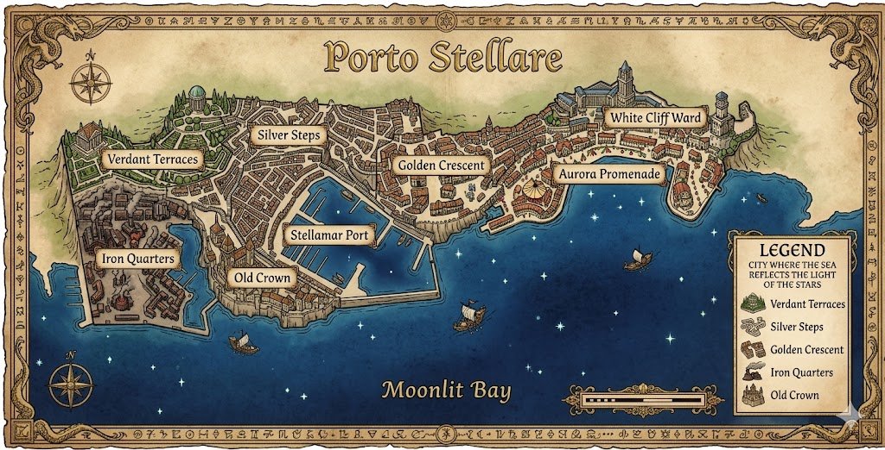
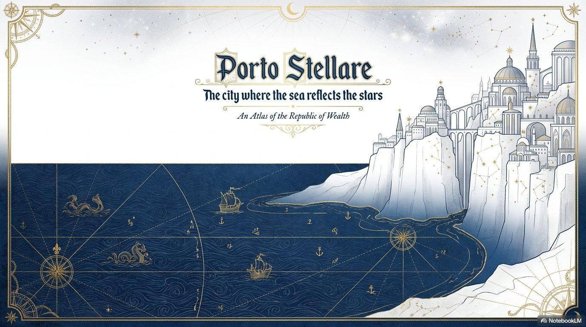

The Veiled Codex
Click or tap a district to explore its lore
Districts
▾
▶ Replay Intro
เมืองที่ท้องทะเลสะท้อนแสงแห่งดวงดาว
The sea reflects the light of the stars

Porto Stellare
An Atlas of the Republic of Wealth — เมืองที่ท้องทะเลสะท้อนแสงแห่งดวงดาว
Esc
Enter